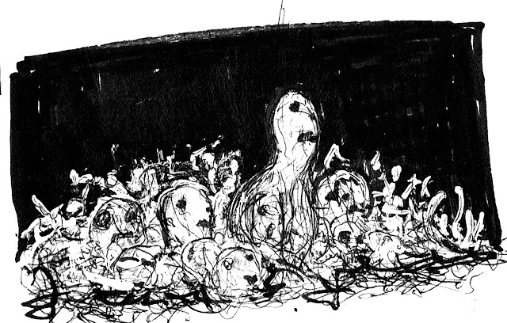
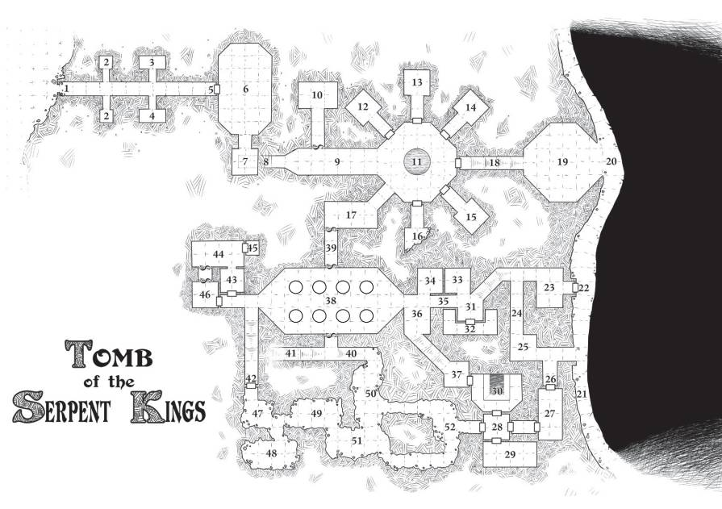

Slangekongernes Grav

Version 4.0
Den konsekvent inkonsekvente opdatering
Skrevet af SKERPLES
(coinsandscrolls.blogspot.com)
Kunst af SCRAP PRINCESS
(monstermanualsewnfrompants.blogspot.com)
Kort af JANON
Opsætning af DAVID SHUGARS
(the3d6.com)
Spiltestet af et forbløffende antal folk. I ved, hvem i er.
Hvis du har spillet denne fangekælder og sendt mig noter, har jeg læst dem. Tusind tak.
Tilskyndelse fra mange, men især fra
ARNOLD K.
(goblinpunch.blogspot.com).
Bliv ved med at være sære.
LICENSE
Værket er licenseret under Creative Commons CC BY-NC-SA.
Du kan dele det gratis, tilpasse det til dit eget system, redigere det, udskrive det og
lægge det i den lokale spilforretninger. Du kan bare ikke sælge det for penge, og du
skal kreditere Skerples et eller andet sted. Det samme gælder kunsten.
Introduktion
NÅR DU STARTER Super Mario Bros, giver spillet dig ikke nogen instruktioner. Den første niveau er snedigt designet til at lære dig reglerne: hop på fjender, saml svampe op, led efter hemmeligheder, hent mønter, undgå gruber. Der er ingen vejledning; spillet selv er vejledningen.
Alle kan nævne "klassiske" fangehuller - Tomb of Horrors, Barrier Peaks, The Temple of Elemental Evil, osv., men i rækkefølge for at disse eventyr giver mening, skal der være nogle form for introduktion. Tomb of Horrors og Death Frost Doom er begge reaktioner på noget, men hvad de reagerer på til eksisterer ikke rigtig som et udgivet produkt.
Det er som om alle de eventyr, vi har, er Bach-koncerter. Folk bliver ved med at skrive fantastiske værker af overvældende genialitet, men nogen skal skrive en bog om, hvordan man spiller klaver. Denne fangekælder er designet til at være "klassisk" uden at være fuld af callbacks og nostalgi. Den har nogle, men ikke alle af de store troper. Den har også fulde designnoter.
DETTE MODUL ER TIL...
- Erfarne GM'er med nye spillere.
- GM'er, der ønsker at lære mere om dungeon design.
- Erfarne GM'er med erfarne spillere, men som er nye til indhold i OSR-stil.
Som en helt ny GM kan du stadig bruge denne fangekælder og
lære en masse af den, men den vil teste dine færdigheder med det samme.
Erfarne spillere kan også have glæde af den.

Den Falske Grav
1: FORHALLEN
En lang korridor med fire åbne rum, to på hver side.
Korridoren ender ved en stor dør af sten med tremmer,
der fører til 6: DEN FALKSE KONGES GRAVKAMMER.
2: VOGTERGRAVENE
Disse små rum er identiske i størrelse og indhold. De er begge
indeholder en trækiste med en lerstatue af en slange-mand
kriger indeni. Statuerne er hule. Hver indeholder en guld
amulet til en værdi af 1gp, et tørret slange-skelet og en sky af
giftgas (d6 skade, kan kun reducere en PC til 0 HP).
Lektion: fangekælderen er organiseret. Der er mønstre.
Der er skjulte skatte. Der er også skjult fare.
PC'erne vil sandsynligvis nærme sig den 2. kiste med
mere forsigtighed, og tjene deres belønning (guld) uden
faren (giften) ved at bruge deres hjerne (og en sten
eller en lang pind).